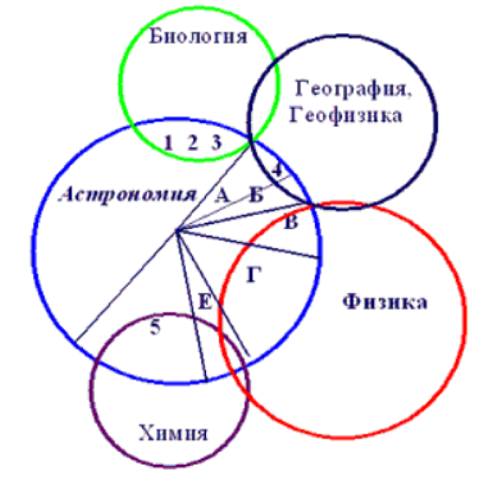

Занятие №1
Тема урока:
ВВЕДЕНИЕ. АСТРОНОМИЯ, ЕЕ СВЯЗЬ С ДРУГИМИ НАУКАМИ. НАЗЕМНЫЕ И КОСМИЧЕСКИЕ ТЕЛЕСКОПЫ.
Литература:
1. Кунаш М.А. Астрономия: общеобразовательная подготовка: учеб.пособие для колледжей/ М.А.Кунаш. – Ростовн/Д: Феникс, 2019.-285с.
2. http://msk.edu.ua/ivk/astronomy.php
Введение
Астрономия [греч. astron - звезда, nomos -закон] – наука, которая изучает строение Вселенной, движение, физическую природу, происхождение и эволюцию небесных тел и образованных ими систем.
Почему астрономию называют древнейшей из наук? А все повторяется в небе над нами: каждую ночь восходят и заходят звезды, меняются лунные фазы, Солнце находит свой путь между звезд. Скорее всего, именно эти закономерности были открыты первыми астрономами, сидевшими у первобытного костра.
Астрономия, ее связь с другими науками

С самых древних времен развитие астрономии и математики было тесно связано между собой. В переводе с греческого название одного из разделов математики - геометрии - означает «землемерие».
Взаимодействие астрономии и физики продолжает оказывать влияние на развитие других наук, технологии, энергетики и различных отраслей народного хозяйства.
Астрономию, географию и геофизику связывает изучение Земли как одной из планет Солнечной системы, ее основных физических характеристик (фигуры, вращения, размеров, массы и т. д.) и влияния космических факторов на географию Земли: строение и состав земных недр и поверхности, рельеф и климат, периодические, сезонные и долговременные, местные и глобальные изменения в атмосфере, гидросфере и литосфере Земли - магнитные бури, приливы, смена времен года, дрейф магнитных полей, потепления и ледниковые периоды и т. д., возникающие в результате воздействия космических явлений и процессов (солнечной активности, вращения Луны вокруг Земли, вращения Земли вокруг Солнца и др.); а также не потерявшие своего значения астрономические методы ориентации в пространстве и определения координат местности.
Астрономию и химию связывают вопросы исследования происхождения и распространенности химических элементов и их изотопов в космосе, химическая эволюция Вселенной. Возникшая на стыке астрономии, физики и химии наука космохимия тесно связана с астрофизикой, космогонией и космологией, изучает химический состав и дифференцированное внутреннее строение космических тел, влияние космических явлений и процессов на протекание химических реакций, законы распространенности и распределения химических элементов во Вселенной, сочетание и миграцию атомов при образовании вещества в космосе, эволюцию изотопного состава элементов.
Астрономию и биологию связывают проблемы возникновения и существования жизни и разума на Земле и во Вселенной; гипотезы происхождения жизни, приспособляемость и эволюция живых организмов; проблемы земной и космической экологии и воздействия космических процессов и явлений на биосферу Земли; загрязнение окружающего космического пространства веществом и излучением.
Связь астрономии с "наукой наук" - философией - определяется тем, что астрономия как наука имеет не только специальный, но и общечеловеческий, гуманитарный аспект, вносит наибольший вклад в выяснение места человека и человечества во Вселенной, в изучение отношения "человек - Вселенная".
Роль астрономии в развитии цивилизации.
Конечно, прошли те времена, когда астрономические наблюдения были необходимы, чтобы проложить курс корабля в открытом море, определить продолжительность года или время начала сева. Сегодня эти вопросы решаются с помощью технических средств. Но астрономия по-прежнему важна для человечества.
При ответе на этот вопрос можно говорить о двух различных аспектах: философско-духовном и практическом. В духовном смысле: Астрономия полезна потому, что она возвышает нас над нами самими; она полезна потому, что она величественна; она полезна потому, что она прекрасна. Именно она являет нам, как ничтожен человек телом и как велик он духом, ибо ум его в состоянии объять сияющие бездны, где его тело является лишь темной точкой, в состоянии насладиться их безмолвной гармонией. Так мы приходим к сознанию своей мощи, и это сознание многого стоит, потому что делает нас сильнее, - так писал великий физик, математик и астроном - Анри Пуанкаре.
Но еще важнее роль астрономии в реальной жизни современного человечества, астрономия необходима для выживания цивилизации, потому что космос создает постоянные угрозы для нашей цивилизации.
Проблемы сегодняшнего дня. Погодные условия на Земле во многом зависят от гигантских взрывов на Солнце, сопровождающихся вспышками и выбросами космического вещества. Нарушается работа электронных устройств космических аппаратов, повреждаются наземные энергетические сети, создается реальная угроза здоровью экипажей космических станций. В зависимости от энергии, время, за которое солнечные частицы достигают земной поверхности, может составлять от 10 минут до нескольких часов. Надежное и точное предсказание и предупреждение о солнечной активности важно для нормальной работы аппаратур связи и навигации, и может помочь сэкономить сотни миллионов долларов, затрачиваемых на обслуживание и восстановление поврежденных систем.
Проблемы недалекого будущего. Астероид Икар в 1968 году приблизился к Земле на расстояние 6 млн км. Если бы Икар столкнулся с Землей, то произошел бы взрыв, эквивалентный взрыву 100 Мт тротила, или взрыву ста атомных бомб. Используя данные об ударных кратерах на поверхности Земли, планет и их спутников, астрономы пришли к следующим оценкам: столкновения с крупными астероидами, которые могут привести к глобальным катастрофам в развитии Земли, происходят примерно раз в 500 тыс. лет; столкновения с малыми астероидами происходят чаще (каждые 300 лет), но последствия этих столкновений носят лишь локальный характер. На основе орбит уже изученных астероидов астрономы составили список потенциально опасных известных астероидов, которые пройдут на критическом расстоянии от Земли до конца XXI века. Этот список насчитывает более 300 объектов. Орбиты наиболее крупных из них показаны на рисунке. В целом же астрономы считают, что число опасных и пока не обнаруженных опасных астероидов порядка 2500. Именно эти таинственные странники и представляют главную опасность будущему Земли.
Структура и масштабы Вселенной.
Космология – учение о Вселенной в целом, основанное на результатах исследований, доступных для астрономических наблюдений.
Вселенная – весь существующий материальный мир, безграничный во времени и пространстве и бесконечно разнообразный по формам, которые принимает материя в процессе своего развития.
Вселенная безгранична, но не бесконечна.
Метагалактика – часть Вселенной, доступная для астрономических наблюдений (т.е. те галактики, скорость «убегания» от нас которых меньше скорости света)
Вселенная существует около 15 млрд лет.
Наиболее распространённым типом небесных тел являются звезды.
Звезды распределены на небе не равномерно, а отдельными компактными группами – созвездиями. Под созвездиями понимают область неба в пределах некоторых установленных границ. Это сделано для удобства ориентировки на небесной сфере и обозначения звезд. Всё небо разделено на 88 созвездий.
Есть три группы созвездий по происхождению их названий:
1. Связанные с древнегреческой мифологией
2. Связанные с предметами, на которые похожи фигуры, образуемые яркими звездами созвездий (Стрела, Треугольник, Весы, Лев, Рак, Скорпион, Большая медведица и др.)
3. Иногда в созвездии выделяют группу звезд с названием, отличным от названия созвездия – астеризм (например, Ковш в созвездии Малая Медведица).
Гигантские звёздные системы, состоящие из сотен миллиардов звёзд, образуют галактику.
Солнечная система и окружающие её звезды составляют ничтожную часть нашей Галактики – Млечный Путь.
Ближайшие соседи нашей Галактики – Туманность Андромеды, Большие Магеллановы облака и Малые Магеллановы облака.
Кроме звёзд в состав галактик входят туманности – газопылевые скопления (межзвёздный газ, состоящий из атомарного водорода, и космическая пыль)
* Американский астрофизик Э. Хаббл предложил следующую классификацию галактик:* Эллиптические галактики имеют форму сплюснутых сфероидов. Состоят в основном из старых звезд.
* Спиральные галактики имеют форму спирали (Млечный Путь, Туманность Андромеды). В рукавах спиральных галактик находятся молодые звезды, идут процессы образования новых звезд.
* Галактики неправильной формы (Магеллановы облака). Имеют разнообразную форму.
Млечный Путь относится к типу спиральных галактик, содержит около 150 миллиардов звезд (Солнцу около 4-4,5 млрд лет).
Пространство между галактиками и звездами внутри галактик заполнено очень разреженным веществом: межзвёздным газом, космической пылью, элементарными частицами, а также электромагнитным излучением.
В каждом кубическом сантиметре межзвездного пространства в среднем находится один атом вещества. Для сравнения, в воздухе при нормальных условиях около 1019 молекул в 1 см3.
При самом высоком вакууме, который может быть получен в лабораторных условиях (порядка 10-12 мм. рт. ст.) в 1 см3содержится сто тысяч молекул.
Масштабы Вселенной столь велики, что использовать единицы длины, принятые в СИ, неудобно. Например, размеры нашей Галактики таковы, что луч света, распространяясь со скоростью 300000 км/с проходит расстояние от одного ее края до другого за сто тысяч лет.
В старой научной литературе:
Астрономическая единица (1 а.е.) – средний радиус орбиты Земли при её обращении вокруг Солнца.
1 а.е. = 150 млн км (расстояние от Солнца до Земли)
Наиболее удалённая от Солнца «бывшая» планета, Плутон, отстоит от него на расстоянии 40 а.е. Это размер Солнечной системы.
В популярной литературе:
Световой год – расстояние, которое свет проходит за одни земной год.
1 с.г. = 10000 млрд км = 10 трлн. Км.
В современной научной литературе:
Парсек (пк) – параллакс-секунда.
Секунда – единица измерения угла.
Параллакс – видимое изменение положения предмета вследствие перемещения точки наблюдения.
В астрономии различают: Суточный параллакс, Годичный параллакс, Вековой параллакс (оборот Солнца относительно ядра галактики)
По параллаксу небесных светил методами тригонометрии определяют расстояние до этих светил.
Парсек – расстояние, с которого радиус земной орбиты виден под углом в одну угловую секунду.
1 пк = 206265 а.е. = 3,3 с.г. = 33 мрлн км.
Самая близкая к Солнцу звезда – Проксима Центавра удалена от него на 1,3 пк.
Солнце удалено от центра нашей Галактики на расстояние 8000 пк.
Диаметр Млечного Пути составляет 40000 пк.
Самая близкая звезда в созвездии Андромеды находится на удалении 720000 пк.
Средняя плотность галактик в наблюдаемой части Вселенной – около 8-10 тысяч на один кубический миллион парсеков.
Типичная скорость относительного движения галактик – около 1000 км/с
Оценочное время вероятного столкновения галактик составляет около 1013 лет, что больше времени существования Вселенной в 1400 раз.
Особенности астрономических методов исследования.
На протяжении тысячелетий астрономы изучали положение небесных объектов на звёздном небе и их взаимное перемещение с течением времени. Именно поэтому, долгое время, а точнее с III века до нашей эры господствовала геоцентрическая система мироустройства Клавдия Птолемея. Напомним, что согласно ей, в центре всего мироздания находилась планета Земля, а все остальные небесные тела, в том числе и Солнце, вращались вокруг неё.
И лишь в середине XVI века, а точнее в 1543 году, вышел великий труд Николая Коперника «Об обращении небесных сфер», в котором приводились доводы о том, что центром нашей системы является не Земля, а Солнце. Так возникло гелиоцентрическое учение, которое дало ключ к познанию Вселенной
Основным способом исследования небесных объектов и явлений служат астрономические наблюдения.
Астрономические наблюдения — это целенаправленная и активная регистрация информации о процессах и явлениях, происходящих во Вселенной – основной источник информации в астрономии.
Астрономия изучает строение Вселенной, движение, физическую природу, происхождение и эволюцию небесных тел и образованных ими систем. Астрономия исследует также фундаментальные свойства окружающей нас Вселенной. Огромные пространственно-временные масштабы изучаемых объектов и явлений определяют отличительные особенности астрономии.
Эта первая особенность астрономии отличает ее от других естественных наук (например, физики или химии), где значительную роль играют опыты, эксперименты. Возможности проведения экспериментов за пределами Земли появились лишь благодаря космонавтике. Но и в этих случаях речь идет о проведении экспериментальных исследований небольшого масштаба, таких, например, как изучение химического состава лунных или марсианских пород. Трудно представить себе эксперименты над планетой в целом, звездой или галактикой.
Вторая особенность объясняется значительной продолжительностью целого ряда изучаемых в астрономии явлений (от сотен до миллионов и миллиардов лет). Поэтому непосредственно наблюдать происходящие изменения невозможно. Даже изменения, происходящие на Солнце, на Земле регистрируются лишь через 8 минут и 19 секунд (именно столько времени требуется свету, чтобы преодолеть расстояние от Солнца до Земли). Что же касается далёких галактик, то здесь речь уже идёт о миллиардах лет. То есть, изучая далёкие звёздные системы — мы изучаем их прошлое. Когда изменения происходят особенно медленно, приходится проводить наблюдения многих родственных между собой объектов, например звезд. Основные сведения об эволюции звезд получены именно таким способом.
Третья особенность астрономии обусловлена необходимостью указать положение небесных тел в пространстве (их координаты) и невозможностью различить, какое из них находится ближе, а какое дальше от нас. На первый взгляд все наблюдаемые светила кажутся нам одинаково далекими. Нам, как и людям в древности, кажется, что все звёзды одинаково удалены от нас и располагаются на некой сферической поверхности неба — небесной сфере, — которая как единое целое вращается вокруг Земли.
Итак, как наука, астрономия основывается, прежде всего, на наблюдениях. В отличие от физиков астрономы лишены возможности ставить эксперименты. Практически всю информацию о небесных телах приносит нам электромагнитное излучение. Только в последние сорок лет отдельные миры стали изучать непосредственно: зондировать атмосферы планет, изучать лунный и марсианский грунт, изучать непосредственно атмосферу Титана.
В XIX веке физические методы исследования проникли в астрономию, и возникла симбиотическая наука - астрофизика, которая изучает физические свойства космических тел.
Наземные и космические телескопы, принцип их работы.
Всеволновая астрономия: электромагнитное излучение как источник информации о небесных телах.
Чтобы исследования были точными, необходимы специальные инструменты, приборы.
1) Установлено, Фалес Милетский в 595 г. до н.э. впервые использовал гномон (древнейший астрономический инструмент, вертикальный предмет (стержень обелиск, колонна, шест), позволяющий по наименьшей длине его тени (в полдень) определить угловую высоту Солнца. Это позволило использовать этот инструмент и как солнечные часы, и определить этапы солнцестояния, равноденствия, продолжительность года, широту наблюдателя и многое другое.
2) Гиппарх (180-125г, Др. Греция) использовал астролябию, что позволило ему измерить параллакс Луны, в 129г до н.э., установить продолжительность года в 365,25сут, определить процессию и составить в 130г до н.э. звездный каталог на 1008 звезд и т.д.
В различное время существовали и астрономический посох и астролабон (это первая разновидность теодолита), квадрант и многие другие приборы и инструменты. Наблюдения за небесными телами и объектами проводятся в специальных учреждениях - обсерваториях, которые возникли в самом начале развития астрономии до н. э.
Для возможных исследований и наблюдений в разных странах были созданы астрономические обсерватории. В нашей стране их порядка двух десятков: Главная Пулковская астрономическая обсерватория РАН (ГАО РАН), Государственный астрономический институт им. П. К. Штернберга (ГАИШ), Кавказская горная обсерватория (КГО ГАИШ) и пр.
Настоящее астрономическое исследование началось, когда в 1609 г. изобрели телескоп.
Переворот в астрономии произошёл в 1608 году, после того как голландский мастер по изготовлению очков Иоанн Липперсгей обнаружил, что две линзы, расположенные на одной прямой, могут увеличивать предметы. Так была изобретена зрительная труба.
Этой идеей сразу же воспользовался Галилей. В 1609 году он сконструировал свою первую зрительную трубу с трёхкратным увеличением и направил её в небо. Так зрительная труба превратилась в телескоп.
Телескоп стал основным прибором, который используется в астрономии для наблюдения небесных тел, приема и анализа приходящего от них излучения.
Телескоп (tele – далеко и skopeo – смотрю) - оптический прибор, увеличивает угол зрения, под которым видны небесные тела (разрешающая способность), и собирает во много раз больше света, чем глаз наблюдателя (проникающая сила).
Принцип работы телескопа:
Параллельные лучи света (например, от звезды) падают на объектив. Объектив строит изображение в фокальной плоскости. Лучи света, параллельные главной оптической оси, собираются в фокусе F, лежащем на этой оси. Другие пучки света собираются вблизи фокуса – выше или ниже. Это изображение с помощью окуляра рассматривает наблюдатель.
Принципиальная схема телескопа
Как известно, если предмет находится дальше двойного фокусного расстояния, она дает уменьшенное, перевернутое и действительное его изображение. Это изображение располагается между точками фокуса и двойного фокуса линзы. Расстояния до Луны, планет, а тем более звезд так велики, что лучи, приходящие от них, можно считать параллельными. Следовательно, изображение объекта будет располагаться в фокальной плоскости.
Основные характеристики телескопов.
1) Апертура телескопа (D) - это диаметр главного зеркала телескопа или его собирающей линзы.
Чем больше апертура, тем больше света соберёт объектив, и тем более слабые объекты вы увидите.
2) Фокусное расстояние телескопа - это расстояние, на котором зеркало или линза объектива строит изображение бесконечно удаленного объект.
Обычно имеется ввиду фокусное расстояние объектива (F), поскольку окуляры сменные, и у каждого из них фокусное расстояние своё.
От фокусного расстояния зависит не только увеличение, но и качество изображения. Чем больше фокусное расстояние, тем качественнее изображение. От фокусного расстояния телескопа зависит и его длина, особенно рефлекторов Ньютона и рефракторов.
3) Увеличение (или кратность) телескопа (n) показывает, во сколько раз телескоп может увеличить объект или угол, под которым наблюдатель видит объект. Оно равно отношению фокусных расстояний объектива F и окуляра f.
n=F/f
Телескоп увеличивает видимые угловые размеры Солнца, Луны, планет и деталей на них, но звезды из-за их колоссальной удаленности все равно видны в телескоп, как светящиеся точки.
4) Разрешающая способность – минимальный угол между двумя звездами, видимыми раздельно. Проще говоря, под разрешающей способностью можно понимать "чёткость" изображения.
Разрешающая способность можно вычислить по формуле:
β=1,22·λ/D
где β – угловое разрешение в секундах, D – диаметр объектива в миллиметрах, λ – длина волны излучения; 1,22 – коэф-т согласно критерию Рэлея.
Виды телескопов:
1. Виды телескопов:
a)Рефрактор.
b)Рефлектор.
c)Зеркально – линзовый
2.Радиотелескопы
Если, а если, – то рефлектор . В зеркально-линзовых телескопах используется комбинация зеркала и линз.
Телескоп – рефрактор - в качестве объектива телескопа используется линза (от лат. refracto – преломляю) – использует преломление света.
Схема устройства телескопа – рефрактора
Телескоп – рефлектор - в качестве объектива телескопа используется вогнутое зеркало (reflecto – отражаю) - использует отражение света.
Схема устройства телескопа – рефлектора
Помимо рефракторов и рефлекторов в настоящее время используются различные типы зеркально-линзовых телескопов.
Школьные телескопы по большей части являются рефракторами, их объективом, как правило, служит двояковыпуклая собирающая линза.
В нынешних обсерваториях мы можем увидеть крупные оптические телескопы. Крупнейший в России телескоп-рефлектор, который имеет зеркало диаметром 6 м, сконструирован и построен Ленинградским оптико-механическим объединением. Он называется «Большой телескоп азимутальный» (сокращённо БТА).
Изучение Вселенной началось и продолжается в течение нескольких тысячелетий, но вплоть до середины прошлого века исследования были исключительно в оптическом диапазоне электромагнитных волн. Поэтому доступной областью излучения был диапазон от 400 до 700 нм. Первые астрономические научные наблюдения являлись астрометрическими, изучалось только расположение планет, звёзд и их видимое движение на небесной сфере.
Но небесные тела дают различное излучение: видимый свет, инфракрасное, ультрафиолетовое, радиоволны, рентгеновское, гамма – излучения. В XX веке астрономия стала всеволновой. Астрономию называют всеволновой, поскольку наблюдения за объектами ведутся не только в оптическом диапазоне. В настоящее время излучение от космических объектов регистрируется во всем диапазоне электромагнитного спектра от длинноволнового радиоизлучения (частота 107 , длина волны l = 30 м) до гамма-излучения (частота 1027 Гц, длина волны l = 3∙10–19×м = 3∙10–10 нм). Для этой цели используются различные приборы, каждый из которых способен принимать излучение в определенном диапазоне электромагнитных волн: инфракрасное, ультрафиолетовое, рентгеновское, гамма- и радиоизлучение.
Астрономические наблюдения проводятся во всем диапазоне электромагнитных волн.
Наблюдения в других спектральных диапазонах позволили сделать важные открытия. Сначала были изобретены радиотелескопы.
Радиотелескопы - преимущества: в любую погоду и время суток можно вести наблюдение объектов, недоступные для оптических. Представляют собой чашу (подобие локатора).
Радиоастрономия получило развитие после войны. Наибольшие сейчас радиотелескопы это неподвижные РАТАН- 600, Россия (вступил в строй в 1967г в 40 км от оптического телескопа, состоит из 895 отдельных зеркал размером 2,1х7,4м и имеет замкнутое кольцо диаметром 588м), Аресибо (Пуэрто –Рико, 305м-забетонированная чаша потухшего вулкана, введен в 1963г). Из подвижных имеют два радиотелескопа 100м чашу
Радиотелескоп
Даже оптические телескопы, находящиеся на орбите, имеют определенные преимущества по сравнению с наземными. Наиболее крупному из них космическому телескопу им. Хаббла, созданному в США, с зеркалом диаметром 2,4 м доступны объекты, которые в 10–15 раз слабее, чем такому же телескопу на Земле. Его разрешающая способность составляет 0,1Ѕ, что недостижимо даже для более крупных наземных телескопов. На снимках туманностей и других далеких объектов видны мелкие детали, неразличимые при наблюдениях с Земли.
Космический телескоп им. Хаббла
Практическое применение астрономических исследований.
Астрономия и ее методы имеют большое значение в жизни современного общества. Без ее участия невозможно решать фундаментальные вопросы, связанные с течением важнейших природных процессов
Шире распространяются астрономические методы навигации в мореплавании и авиации, а в последние годы и в космонавтике. Вычисление эфемерид (таблиц положений) важнейших объектов и составление календарей, необходимых в народном хозяйстве, также основаны на астрономических данных.Составление географических и топографических карт, предвычисление наступлений морских приливов и отливов, определение силы тяжести в различных точках земной поверхности с целью обнаружения залежей полезных ископаемых, все это в своей основе опирается на астрономические методы.
Исследование процессов, происходящих на различных небесных телах, позволяет астрономам изучать вещество в таких его состояниях, какие еще не достигнуты в земных лабораториях. Астрономия, и в частности астрофизика, тесно связаны с физикой, химией, математикой. Они способствуют развитию этих наук, которые, как известно, являются основой всей современной техники. Достаточно сказать, что вопрос о роли внутриатомной энергии впервые был поставлен астрофизиками, а величайшее достижение современной техники создание искусственных небесных тел (спутников, космических станций и аппаратов) вообще было бы немыслимо без астрономических знаний.
История развития отечественной космонавтики.
Первый искусственный спутник Земли, полет Ю. А. Гагарина.
Достижения современной космонавтики.
Контрольные вопросы:
1)Какие сведения астрономические вы изучали в курсах других предметов? (природоведение, физики, истории и т.д.)
2)В чем специфика астрономии по сравнению с другими науками о природе?
3)Какие типы небесных тел вам известны?
4)Планеты. Сколько, как называются, порядок расположения, самая большая и т.д.
5)Какое значение в народном хозяйстве имеет сегодня астрономия?